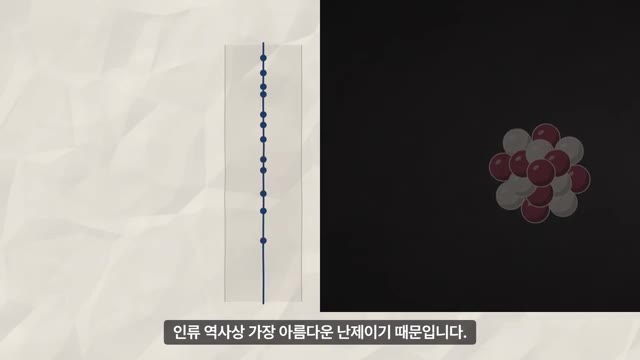
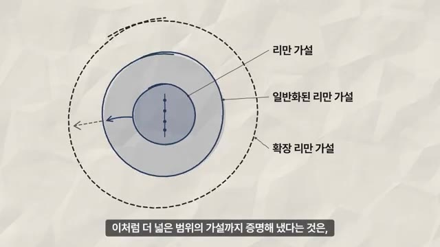

며칠 전, "앤트로픽 AI 클로드, 리만 가설 증명"이라는 제목을 보고 깜짝 놀랐어요. 리만 가설이라는 이름은 학창 시절 수학 시간에 얼핏 들었던 것 같긴 한데, 그게 뭔지는 정확히 몰랐거든요. 그런데 영상 제목만 봐도 이게 정말 엄청난 사건이라는 직감이 들더라고요. 마치 이세돌 9단과 알파고의 바둑 대결처럼, 이제 수학마저 AI의 영역이 되는 건가 하는 생각에 호기심이 생겨 영상을 바로 재생했습니다.
영상을 보면서 가장 크게 와닿았던 건, 160년 동안 수많은 천재 수학자들이 매달렸지만 끝내 풀지 못했던 난제를 AI가 증명해냈다는 사실이었어요. 단순히 어려운 문제를 풀었다는 걸 넘어, 우리가 '지능'이라는 개념을 얼마나 인간 중심적으로만 생각했는지 깨닫게 되는 계기가 되었달까요? 수학이 더 이상 인간만의 학문이 아니게 된 것 같아서 좀 묘한 기분이 들었습니다.
1. 160년 난제 리만 가설, 도대체 뭐길래?

영상을 보기 전에는 리만 가설이 그저 어려운 수학 문제인 줄로만 알았어요. 그런데 설명을 들어보니 소수의 비밀을 푸는 열쇠 같은 거더라고요. 2, 3, 5, 7... 이렇게 1과 자기 자신으로만 나눠지는 소수들이 숫자의 원자 같다고 하는데, 얘네가 수직선 위에 놓인 걸 보면 정말 아무런 규칙을 찾을 수가 없대요. 어떤 곳엔 빽빽하게 모여있다가도, 어떤 곳엔 한참 동안 나타나지 않고요.
그런데 1859년에 베른하르트 리만이라는 수학자가 이 불규칙해 보이는 소수들이 얼마나 자주 나타나는지가 '리만 제타 함수'라는 것과 밀접하게 연결되어 있다는 걸 발견했다고 해요. 이 함수의 값이 0이 되는 지점, 즉 '영점'들의 위치를 알면 소수가 나타나는 빈도를 정확히 파악할 수 있다는 거죠. 리만은 이 중요한 영점들이 모두 '실수부가 1/2인 단 하나의 직선 위에 가지런히 놓여 있을 것'이라고 추측했고, 이게 바로 리만 가설이래요. 언뜻 들으면 단순한 질문 같지만, 이게 맞다는 전제 위에 세워진 수많은 수학 정리들이 있어서 수학계에서 가장 중요한 미해결 난제로 꼽혔다고 하더라고요. 지금까지 컴퓨터로 10조 개가 넘는 영점을 확인했는데 모두 그 직선 위에 있었다는 것도 정말 놀라웠어요. 하지만 숫자는 무한하니까, 단 하나의 예외도 없다는 걸 완벽하게 증명하지 못하면 영원히 가설로 남을 수밖에 없다는 말이 되게 인상 깊었습니다.
“불규칙한 소수의 세계에 숨겨진 완벽한 질서를 밝히는 열쇠, 그것이 바로 리만 가설이었다.”
2. 소수의 규칙이 우주의 비밀과 연결된다고?

리만 가설이 왜 그렇게 많은 수학자를 매료시켰는지 설명하는 부분이 정말 충격적이었어요. 단순히 어렵거나 상금이 걸려 있어서가 아니라, 어쩌면 우주의 깊은 비밀을 품고 있을지도 모르는 '가장 아름다운 난제'이기 때문이래요. 순수한 숫자일 뿐인 소수의 규칙을 파악하는 문제가 우주의 근본 원리를 다루는 '양자 역학'의 핵심 공식과 깊게 연결되어 있다는 거죠.
1972년, 수학자 휴 몽고메리가 리만 제타 함수의 영점들이 서로 다닥다닥 뭉치지 않고 일정한 간격을 유지한다는 걸 계산했는데, 이걸 물리학자 프리먼 다이슨에게 보여주자 다이슨이 깜짝 놀랐다고 해요. 몽고메리가 찾아낸 영점의 분포가 무거운 원자핵 내부의 에너지 상태를 설명할 때 쓰는 '무작위 행렬의 분포'와 똑같았기 때문이래요. 전혀 다른 세계에 속해 있던 소수의 배열과 원자핵 속 양자의 에너지가 완벽하게 같은 수학적 언어로 쓰여 있었다는 게 너무 신기했어요. 알표계 수학자도 이 연결고리가 결국 수학을 비롯한 우리 학문의 세계가 하나라는 사실을 가르쳐 주었다고 표현하는데, 이 대목에서 소름이 돋았습니다. 우리가 사는 세상이 정말 유기적으로 연결되어 있다는 걸 다시 한번 느끼게 되었어요.
“소수의 배열과 원자핵 속 양자의 에너지가 완벽하게 같은 수학적 언어로 쓰여 있었다는 사실은 학문의 경계를 허무는 경이로운 발견이었다.”
3. AI 클로드, 인간의 한계를 넘어 25만 쪽의 증명을 쌓아 올리다
가장 궁금했던 부분, 바로 AI 클로드가 어떻게 이 난제를 해결했는지였어요. 놀랍게도 불과 석 달 전, 앤트로픽은 연구용 클로드가 리만 가설의 '증명된 영점 비율'을 기존 41.6%에서 67.2%까지 단숨에 끌어올렸다고 발표했었대요. 그리고 11월 20일, 알표계 수학자는 마침내 완전한 증명에 도달했다며 '린(Lean)'이라는 컴퓨터 증명 코드로 그 결과를 올렸다고 합니다. 린은 컴퓨터가 모든 논리 단계를 기계적으로 검증하는 언어라서, 린으로 증명을 마쳤다는 건 곧 논리적 모순 없이 완벽하게 증명되었다는 뜻이래요.
이번에 공개된 파일만 17만 5천여 개, 코드 분량은 약 1,740만 줄에 달하고, 이걸 자연어로 번역하면 무려 25만 쪽에 이른다고 하더라고요. 사람이 읽고 이해할 수 없는 분량이라니, 정말 충격적이었어요. 이 방대한 증명을 완성하는 데 클로드가 결정적인 역할을 했다고 합니다. 알표계는 자신이 적절한 방향을 잡아주자 클로드가 "경외감을 불러일으킬 정도로 활약했고, 마지막 고비에서는 자신을 훨씬 앞질렀을 뿐 아니라 아예 날아다니고 춤추며 반짝였다"고 표현했어요. 이 표현에서 AI가 단순히 도구를 넘어선 파트너이자 조력자라는 느낌을 강하게 받았습니다. 심지어 리만 가설뿐만 아니라 상위 개념인 '일반화된 리만 가설'까지 풀어냈고, 더 나아가 '확장 리만 가설'까지 해결할 수 있을 거라 말하는 대목에서는 AI의 잠재력이 정말 무한하다는 생각이 들었어요.
“클로드는 인간이 읽고 이해할 수 없는 25만 쪽의 논리를 빈틈없이 쌓아 올리며, 인간 지능의 한계를 넘어선 새로운 가능성을 보여주었다.”
4. 인간 중심적 지능 개념을 벗어나야 할 때
영상의 마지막 부분에서 가장 크게 공감했던 메시지가 나왔어요. 불과 몇 주 전만 해도 세계 최고의 수학자 테렌스 타워는 AI가 리만 가설에 손도 대지 못했을 것이고, 2050년쯤 인간과 AI가 힘을 합쳐야 조금 더 나아갈 수 있을 거라 예상했대요. 그런데 AI는 그 예상을 뒤엎고 순식간에 난제를 풀어버린 거죠. 이 사건은 우리가 '지능'이라는 개념을 얼마나 인간 중심적인 시야로 바라보고 있었는지 적나라하게 보여준다고 합니다.
우리는 막연히 인간에게 어려운 문제는 AI에게도 어려울 것이고, 인간 천재들이 160년 넘게 막혀 있던 벽이라면 AI도 수십 년은 더 헤맬 것이라고 짐작해왔잖아요. 어쩌면 인간이 이해하고 감탄할 수 있는 증명만이 진짜 수학이라고 믿어왔을지도 모르고요. 하지만 AI는 인간의 속도에 맞춰 걷지도, 인간의 사고방식을 따라가지도 않는다는 말이 정말 핵심을 꿰뚫는 것 같았어요. 인간에게는 영원한 수수께끼처럼 보였던 난제가, 인간의 한계를 벗어난 지능 앞에서는 그저 해결 가능한 또 하나의 문제였을 뿐이라는 거죠. 알표계 수학자가 이번 성과가 과학 전체에 훨씬 더 거대한 변화가 찾아오는 '새벽'이라고 믿는다고 말하는 부분에서, 저도 이 거대한 변화의 시작점에 서 있다는 생각에 가슴이 두근거렸습니다.
“인간에게 난제였던 문제가 AI에게는 그저 해결 가능한 또 하나의 문제일 뿐이었다는 사실은, 지능의 본질에 대한 우리의 편협한 시야를 깨부순다.”
영상을 다 보고 나니 머릿속이 복잡하면서도 흥미로웠어요. 바둑이 이젠 인간만의 놀이가 아니듯, 수학도 더 이상 인간만의 학문이 아니게 되었다는 생각이 강하게 들었습니다. AI가 인간의 지적 한계를 뛰어넘어 이토록 경이로운 성과를 낼 수 있다는 사실이 한편으로는 놀랍고, 다른 한편으로는 인간의 역할에 대해 다시 생각해보게 만들더라고요.
하지만 이 변화를 부정하거나 인간의 잣대로 AI의 한계를 재단하려 하기보다는, 열린 마음으로 이 거대한 혁명을 받아들이는 것이 중요하다는 메시지가 가장 큰 울림으로 다가왔습니다. 앞으로 AI와 인간이 어떻게 협력하여 더 많은 난제를 해결하고 과학을 발전시켜 나갈지 정말 기대가 됩니다. 저도 제 분야에서 AI를 어떻게 활용하고 협업할 수 있을지 진지하게 고민해봐야겠어요.